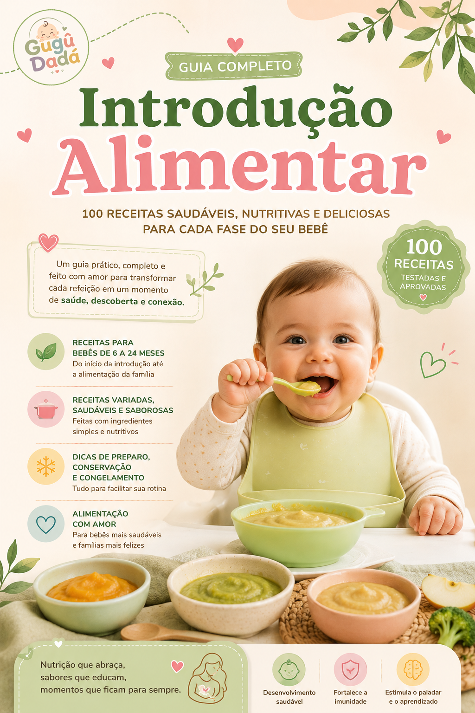

Ferro: O Nutriente Mais Importante para Bebês
A partir dos 6 meses, as reservas de ferro do seu bebê começam a cair naturalmente. Esse é o momento mais crítico para prevenir a anemia — uma das deficiências mais comuns nessa fase. Não se assuste: com escolhas certas e consistentes no prato, você protege o desenvolvimento do cérebro, da imunidade e da energia do seu pequeno. Aqui vai o que realmente importa, de forma prática e sem complicação. Entender sobre ferro é um dos maiores presentes que você pode dar ao seu bebê agora.
Alimentos Ricos em Ferro (Priorize Estes!)
Concentre-se em fontes de alta qualidade:
- Carnes (bovina, frango, peixe): ferro heme, absorvido em até 30%. Ofereça diariamente se possível — é a forma mais eficiente e natural.
- Leguminosas: feijão, lentilha, grão-de-bico amassados ou em papinha. Excelente opção vegetariana, rica em proteína também.
- Vegetais folhosos escuros: couve, espinafre, rúcula — mas sempre combinados com vitamina C para melhorar a absorção.
- Outros: cereais fortificados, gema de ovo (a partir de introdução segura), tubérculos como batata doce e mandioquinha.
Prepare de forma simples: carne moída refogada com pouco óleo e misturada na papinha, feijão cozido e amassado com garfo, ou gema esmagada. Para bebês que ainda estão se acostumando com texturas, comece com quantidades pequenas (1 a 2 colheres de chá) e aumente conforme o interesse dele. O ferro de carnes é especialmente valioso porque é bem absorvido mesmo em pequenas porções.
Combinações que Aumentam a Absorção
O ferro de origem vegetal é absorvido melhor quando você adiciona vitamina C na mesma refeição: laranja, tomate, morango, kiwi, pimentão ou limão. Evite chá, café, leite ou derivados no mesmo horário das refeições de ferro — eles bloqueiam a absorção. Um exemplo simples: papinha de lentilha + tomate + um pedacinho de laranja depois. Fácil e poderoso!
Outras combinações vencedoras: carne com batata doce e tomate; feijão com arroz e suco de laranja diluído; espinafre amassado com limão e um pouco de frango. Essas pareinhas transformam o que seria absorção baixa em algo muito mais eficiente. Lembre-se também de não oferecer leite ou iogurte junto com as refeições principais de ferro — reserve para outros horários. Pequenos ajustes como esses fazem uma grande diferença na prevenção de deficiências.
Exemplos Práticos de Refeições Ricas em Ferro
Para facilitar o dia a dia, aqui vão sugestões simples que cabem na rotina de qualquer família:
- Purê de carne moída + batata doce + tomate amassado.
- Lentilha bem cozida e amassada + arroz + gotinhas de limão.
- Gema de ovo cozida esmagada misturada com abóbora e um pouco de couve.
- Frango desfiado bem macio + mandioquinha + pimentão cozido.
Varie as cores e os sabores para estimular o paladar. Não precisa ser perfeito todos os dias — consistência ao longo da semana é o que conta. Se o bebê rejeitar em uma refeição, ofereça novamente em outra ocasião. A exposição repetida é chave.
Por que Isso é Tão Crítico para o Seu Bebê?
A deficiência de ferro afeta o desenvolvimento cognitivo, o crescimento e pode causar cansaço e irritabilidade. Os primeiros anos são a janela de ouro para o cérebro, que está crescendo rapidinho e precisa desse nutriente para formar conexões e mielina. Uma anemia não tratada nessa fase pode impactar atenção, aprendizado e até o humor da criança por muito tempo.
A boa notícia é que a maioria dos casos pode ser prevenida com alimentação adequada. O eBook Gugû Dadá traz dezenas de receitas ricas em ferro que bebês realmente aceitam, cardápios semanais balanceados e dicas de preparo que cabem na sua rotina real. Você não precisa inventar tudo do zero — tem um guia prático ao seu lado. Com informação e carinho, você está protegendo o futuro do seu filho de forma poderosa e amorosa.
Referências: SBP Manual de Alimentação 2024 • OMS Guideline 2023 • Estudos 2023-2026 sobre anemia em bebês
Continue aprendendo com a gente
- Os Primeiros Passos na Introdução Alimentar → Quando começar, sinais de prontidão e primeiros alimentos.

Não deixe a anemia roubar a energia e o desenvolvimento do seu bebê.
Com o eBook você tem receitas ricas em ferro que seu bebê realmente vai aceitar, cardápios prontos que evitam o estresse do "o que fazer hoje" e o guia completo de combinações que maximizam cada nutriente. Feito para pais que querem proteger o que mais importa sem complicar o dia a dia.
✓ Acesso imediato • 7 dias de garantia • Feito para pais ocupados como você